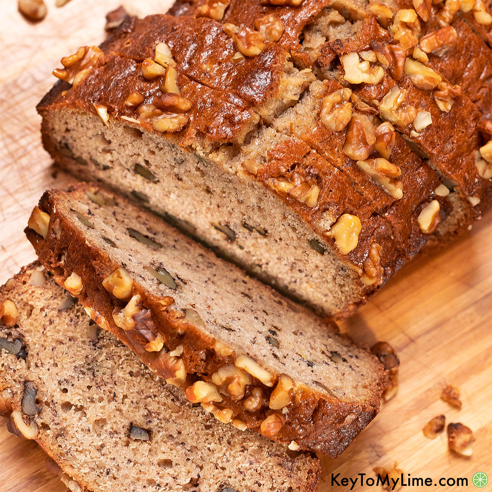

Recipe for Banana Nut Bread

Ingredients
- 1 ¼ cups unbleached all-purpose flour
- 1 teaspoon baking soda
- ½ teaspoon fine salt
- 2 large eggs, at room temperature
- ½ teaspoon vanilla extract
- ½ cup unsalted butter, at room temperature
- 1 cup sugar
- 3 very ripe bananas, peeled, and mashed with a fork (about 1 cup)
- ½ cup toasted walnut pieces
Instructions
- Sift the flour, baking soda, and salt into a medium bowl, set aside. Whisk the eggs and
vanilla
together in a liquid measuring cup with a spout, set aside. Lightly brush a 9 by 5 by 3-inch
loaf pan with butter. Preheat the oven to 350 degrees F.
- In a standing mixer fitted with the paddle attachment or with an electric hand-held mixer,
cream
the butter and sugar until light and fluffy. Gradually pour the egg mixture into the butter
while mixing until incorporated. Add the bananas (the mixture will appear to be curdled, so
don't worry), and remove the bowl from the mixer.
- With a rubber spatula, mix in the flour mixture until just incorporated. Fold in the nuts
and
transfer the batter to the prepared pan. Bake for 55 minutes or until a toothpick inserted
into
the center of the bread comes out clean. Cool the bread in the pan on a wire rack for 5
minutes.
Turn the bread out of the pan and let cool completely on the rack. Wrap in plastic wrap. The
banana bread is best if served the next day.